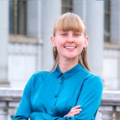

Sonya Kiskachi
Statistics · NLP · Geospatial · Machine Learning
I am a statistician and data scientist with experience across industry and
research. Before my master's, I spent two years at Wells Fargo as a Data
Scientist and NLP Engineer, building fraud detection pipelines, topic models
for customer complaint analysis, and company-wide sentiment dashboards.
Prior to that I interned at Apple on software quality and anomaly detection.
My academic work spans clinical machine learning, satellite remote sensing, and urban equity analysis. I am drawn to problems where the stakes are real — reducing unnecessary radiation in pediatric emergency care, improving cloud detection for Arctic climate models, or measuring amenity access for transit-dependent communities in the Bay Area.
I hold a BA in Data Science with a Geospatial Science emphasis from UC Berkeley (2023), where I also served as Lead Undergraduate Student Instructor for Foundations of Data Science, the largest course in UC history.
My academic work spans clinical machine learning, satellite remote sensing, and urban equity analysis. I am drawn to problems where the stakes are real — reducing unnecessary radiation in pediatric emergency care, improving cloud detection for Arctic climate models, or measuring amenity access for transit-dependent communities in the Bay Area.
I hold a BA in Data Science with a Geospatial Science emphasis from UC Berkeley (2023), where I also served as Lead Undergraduate Student Instructor for Foundations of Data Science, the largest course in UC history.
